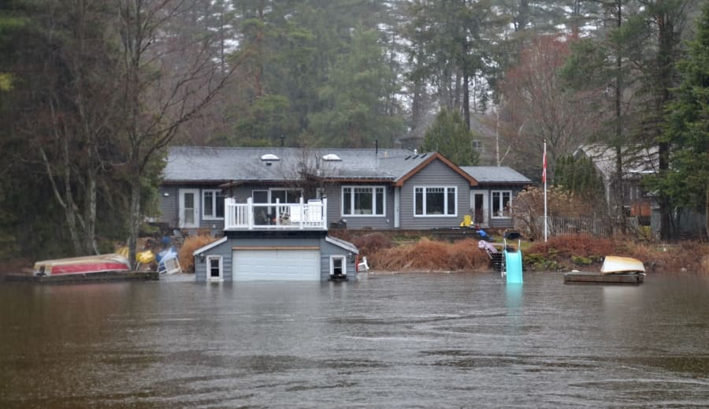
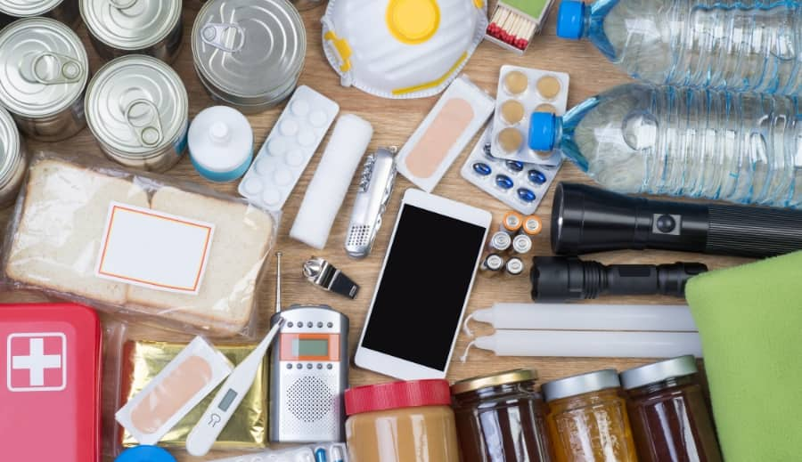

Have you wondered what would happen if a once-in-a-lifetime storm hit your hometown and the power went off for several days or even weeks? What about a blizzard, where snow and ice bring down the power lines and you’re stuck for days in the freezing cold? Or a forest fire that leaves you without power and emergency services, and cuts you off from the rest of the world, leaving your community in the sweltering heat. Since our lives revolve around power and electricity, it’s hard to imagine what you and your family would do if a disaster came out of nowhere and you had to survive multiple days with no electricity. But it happened before in many communities across Canada and it’s important to be prepared in case it happens in your backyard as well.
The Government of Canada recommends that in case of an emergency, every household should be ready to survive for 72 hours without electricity. Since the cleanup from a disastrous weather event could take several days to complete, it’s important you have all the necessary supplies to help your family power through those critical hours and be ready for whatever comes your way while emergency crews restore power.
Here are a couple of things you can do to prepare, so that you’re as ready as you can be if a natural disaster strikes, and you’re left suddenly without power in a potentially dangerous situation.
1. Understand the risks
Floods, blizzards, earthquakes, forest fires and more can strike at any time depending on the season, and the World Meteorological Organization reports that the number of weather-related disasters has significantly increased over the last 5 years. No matter how safe you think your part of the country is, you have probably heard of a significant disaster that occurred nearby in the past. Well, consider that event to be your guide to prepare for an emergency. Even if these occurrences seem rare, it’s better to be overprepared than underprepared.
Do your research. In the part of the country you’re located, what type of weather hazards are you likely to face? Make sure to check the official Canadian Disaster Database which tracks major occurrences by region. Talk to your friends and neighbours about it. Familiarize yourself with what type of extreme weather events happened in the past and could potentially occur in your community again. Knowing what could come your way is half the battle, and an important part of being prepared for a disruptive event.

2. Make a plan
In as much detail as possible, plan for the specific risks you’ve identified. How will you address them, and how you and other members of your household can work together to keep each other safe in a situation where you need to act fast and potentially stay without power for three days or more. What happens if there’s three feet of snow outside of your home and the roads aren’t passable? Or, if a tornado sweeps through your neighbourhood? Simple preparations like where to meet outside the house if you need to evacuate, or which emergency exits in your residence is best to use seem basic but could be critically helpful in a situation where you must act fast. Put all these details on paper and keep them in the visible place in your home.

3. Create an emergency kit
Lastly, create an emergency kit that will help you survive for at least 72 hours without access to the source of power and tap water.. An emergency kit assembled in advance will serve as a source of comfort in a stressful situation. In addition to actually helping your family survive if the power goes out, simply knowing that you have all basic supplies easily accessible will give you peace of mind if the disaster strikes.
Here’re a few things you should consider adding to your emergency kit (source: getprepared.gc.ca):
- Water – at least two litres of water per person per day; include small bottles that can be carried easily in case of an evacuation order
- Food that won’t spoil, such as canned food, energy bars and dried foods
- A trusted battery, like Duracell Optimum (both AA and AAA)
- Battery-powered flashlight
- Battery-powered radio
- First aid kit
- Extra set of keys for your car and house
- Cash, traveler’s cheques, and change
- Important family documents
- Manual can-opener
- A copy of your emergency plan and contact information
- Matches, lighter and battery-powered candles
- Change of clothing and footwear for each household member
- Sleeping bag or warm blanket for each household member
- Toiletries
- Hand sanitizer
- Utensils
- Garbage bags
- Toilet paper
- Water purifying tablets
- Basic tools (hammer, pliers, wrench, screwdrivers, work gloves, dust mask, pocket knife)
- A whistle (in case you need to attract attention)
- Duct tape (to tape up windows, doors, air vents, etc.)
- If applicable, other items such as prescription medication, infant formula, equipment for people with disabilities, etc. (personalize according to your needs)
Since there are many battery-operated devices on the list, it’s important to have trusted and reliable batteries in your kit and have extras in case power outages last longer than expected. When preparing your kit, make sure to stock up on Duracell’s trusted alkaline batteries Optimum. A huge benefit is that they’re also packaged in a slider pack with a resealable storage tray allowing you to peel and reseal as much as you need – which can be super handy in a pitch-dark room. No need to search for random batteries in disorganized storage drawers!
What else?
Fire safety is paramount!
Aside from your kit, you should prepare your house to have the proper devices that can notify you in case of fire or CO2. The Canadian Association of Fire Chiefs (who helps put together the Emergency Kit recommendations for Canadian households) also recommends that you change the batteries in your smoke alarms and Carbon Monoxide detectors twice a year. An easy way to remember when to do it is the beginning and ending of Daylight savings time.
We rarely think a fire will happen in our own home, but with residential fires accounting for about three quarters of all structural fires in Canada, it’s essential to take fire safety seriously as well.
John McKearney, President of CAFC, shared his tip: “When it comes to fires, your first line of defense is prevention. So, a working smoke alarm installed on every level of your home is a must. Test your alarms every month, and replace the batteries every fall when you reset your clocks. Make sure to choose the long-lasting trusted batteries like Duracell Optimum.”
With all these steps complete you’ll be ready for an unpredictable disaster or fire emergency. As the weather changes from fall to winter, think about making preparation for a potential emergency a family activity. Dedicate a rainy fall evening discussing your fire safety and emergency plan with the members of your household and engage everyone in preparing an emergency kit!